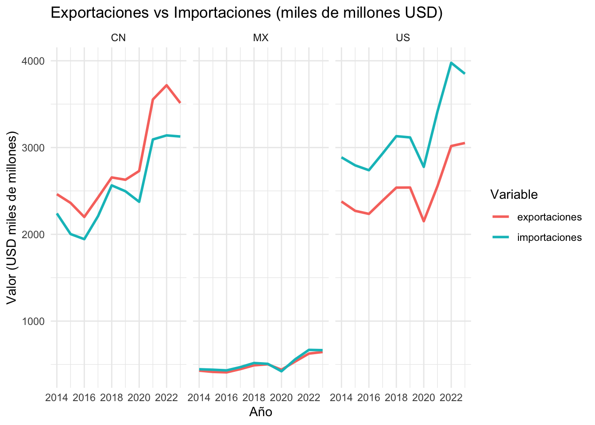
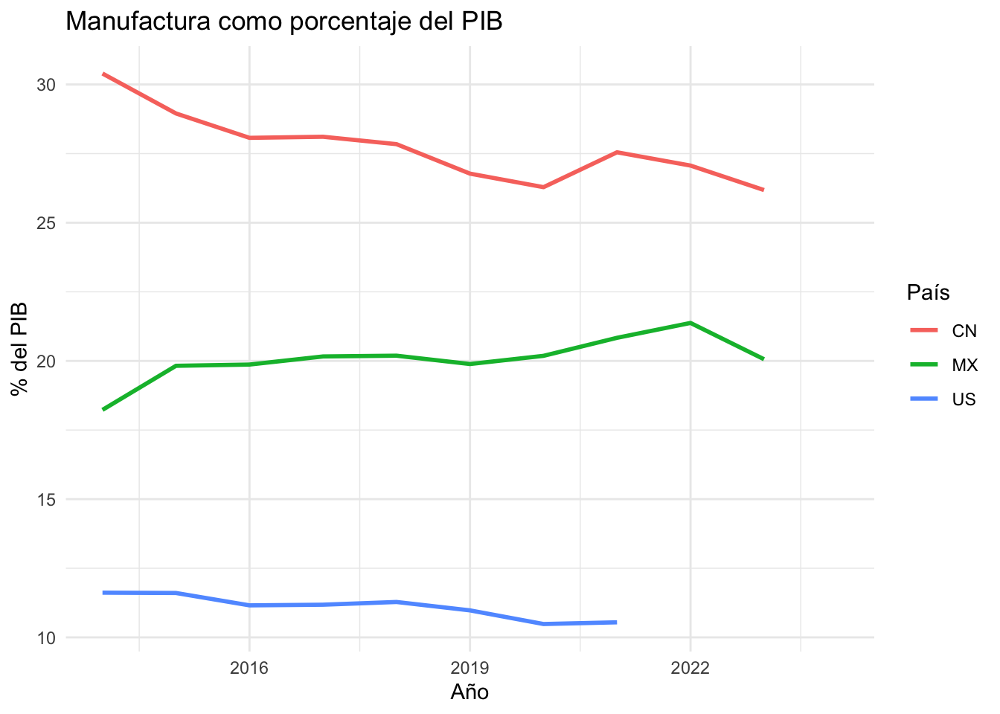
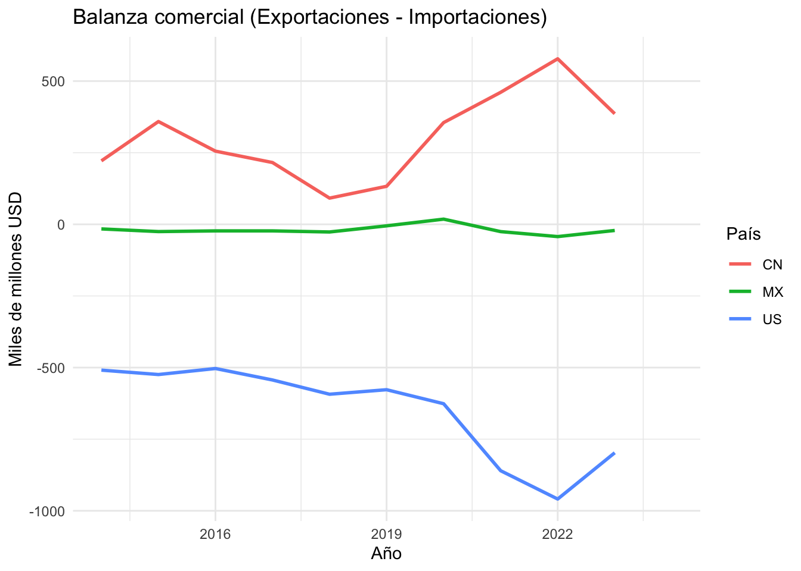

Análisis Exploratorio: Comercio Internacional y Producción en México (2014–2024)
Author
Victor Delgado
Introducción
Este informe forma parte del curso de Ciencia de Datos basado en R y está orientado al análisis exploratorio de datos relacionados con mi proyecto de tesis: Efectos heterogéneos de la confrontación comercial China-EE.UU. (2014–2024) en la balanza comercial y la reorientación productiva de la economía mexicana.
Importación de Datos
Se utilizaron datos del Banco Mundial extraídos mediante el paquete WDI. Los indicadores considerados fueron:
Exportaciones de bienes y servicios (NE.EXP.GNFS.CD)
Importaciones de bienes y servicios (NE.IMP.GNFS.CD)
Manufactura como % del PIB (NV.IND.MANF.ZS)
Crecimiento del PIB (NY.GDP.MKTP.KD.ZG)
# Países: China (CN), México (MX), Estados Unidos (US)paises <-c("CN", "MX", "US")indicadores <-c(exportaciones ="NE.EXP.GNFS.CD",importaciones ="NE.IMP.GNFS.CD",manufactura_pct_pib ="NV.IND.MANF.ZS",crecimiento_pib ="NY.GDP.MKTP.KD.ZG")datos <-WDI(country = paises,indicator = indicadores,start =2014,end =2024,extra =FALSE)
Warning in open.connection(con, "rb"): URL
'https://api.worldbank.org/v2/en/country/CN;MX;US/indicator/NE.EXP.GNFS.CD?format=json&date=2014:2024&per_page=32500&page=6':
Timeout of 60 seconds was reached
Procesamiento y Derivación de Variables
Se realiza limpieza básica, incluyendo la eliminación de columnas sin nombre, y se deriva la balanza comercial:
# Eliminar columnas con nombre NAdatos <- datos[, !is.na(colnames(datos))]# Crear variable de balanza comercialdatos <- datos %>%mutate(balanza_comercial = exportaciones - importaciones)
exportaciones importaciones balanza_comercial
Min. :4.095e+11 Min. :4.217e+11 Min. :-9.589e+11
1st Qu.:5.570e+11 1st Qu.:5.859e+11 1st Qu.:-5.205e+11
Median :2.370e+12 Median :2.435e+12 Median :-2.290e+10
Mean :1.944e+12 Mean :2.065e+12 Mean :-1.209e+11
3rd Qu.:2.611e+12 3rd Qu.:3.053e+12 3rd Qu.: 1.950e+11
Max. :3.718e+12 Max. :3.976e+12 Max. : 5.778e+11
NA's :3 NA's :3 NA's :3
manufactura_pct_pib crecimiento_pib
Min. :10.48 Min. :-8.354
1st Qu.:11.61 1st Qu.: 2.293
Median :20.17 Median : 2.917
Mean :20.24 Mean : 3.315
3rd Qu.:26.85 3rd Qu.: 6.024
Max. :30.40 Max. : 8.448
NA's :5 NA's :3
Análisis Exploratorio de Datos (EDA)
Series de Exportaciones e Importaciones
datos_long <- datos %>%pivot_longer(cols =c(exportaciones, importaciones),names_to ="tipo", values_to ="valor") %>%filter(!is.na(valor), !is.na(year))ggplot(datos_long, aes(x = year, y = valor /1e9, color = tipo)) +geom_line(size =1) +facet_wrap(~iso2c) +labs(title ="Exportaciones vs Importaciones (miles de millones USD)",x ="Año",y ="Valor (USD miles de millones)",color ="Variable" ) +theme_minimal()
Warning: Using `size` aesthetic for lines was deprecated in ggplot2 3.4.0.
ℹ Please use `linewidth` instead.

Al analizar la evolución de las exportaciones e importaciones de México, China y EE.UU. entre 2014 y 2024, se observan tendencias divergentes. México muestra un crecimiento más moderado en exportaciones, mientras que las importaciones también han crecido, aunque con ciertas caídas durante años de tensión comercial (por ejemplo, alrededor de 2018-2019).
Esta dinámica sugiere que la guerra comercial entre China y EE.UU. ha generado oportunidades para que México capte parte de la demanda desviada desde China, aunque aún no se observa una transformación radical en su patrón exportador, sino más bien una continuidad con variaciones leves.
Manufactura como % del PIB
ggplot(datos, aes(x = year, y = manufactura_pct_pib, color = iso2c)) +geom_line(size =1) +labs(title ="Manufactura como porcentaje del PIB",x ="Año",y ="% del PIB",color ="País" ) +theme_minimal()
Warning: Removed 5 rows containing missing values or values outside the scale range
(`geom_line()`).

México presenta un porcentaje relativamente estable de manufactura respecto al PIB, oscilando entre 18% y 20%. En cambio, China mantiene un peso manufacturero mayor (superior al 25%), y EE.UU. mucho menor (rango 10%-12%).
Esto indica que México no ha experimentado aún una reorientación estructural significativa de su economía hacia la manufactura, a pesar de haber ganado terreno en ciertos sectores industriales. El cambio parece más táctico que estructural, limitando su capacidad de absorción plena de las oportunidades derivadas del conflicto.
Balanza Comercial
ggplot(datos, aes(x = year, y = balanza_comercial /1e9, color = iso2c)) +geom_line(size =1) +labs(title ="Balanza comercial (Exportaciones - Importaciones)",x ="Año",y ="Miles de millones USD",color ="País" ) +theme_minimal()
Warning: Removed 3 rows containing missing values or values outside the scale range
(`geom_line()`).

La balanza comercial mexicana se mantiene históricamente negativa, lo que indica una mayor dependencia de las importaciones frente a su capacidad exportadora. No obstante, en años clave del conflicto China–EE.UU. (como 2018 y 2019), se detectan leves mejoras en la balanza, posiblemente por un aumento en exportaciones hacia EE.UU.
Esta mejora temporal podría estar asociada al fenómeno de “nearshoring”, donde empresas estadounidenses trasladan parte de su cadena productiva a México, buscando evitar aranceles con China.
Reflexión sobre el Ciclo de Ciencia de Datos
Este proyecto representa una aplicación práctica del ciclo de Ciencia de Datos:
Formulación del problema: analizar cómo la guerra comercial afecta el comercio y la estructura productiva.
Obtención de datos: Banco Mundial, vía WDI.
Procesamiento: transformación con mutate(), limpieza básica.
Análisis: estadística descriptiva, visualizaciones, identificación de patrones.
Comunicación de hallazgos: en este reporte reproducible.
Dificultades encontradas
Algunos datos faltantes para 2023–2024.
Deseaba integrar datos bilaterales específicos (China-México, EE.UU.-México), pero no se encuentran fácilmente en el WDI.
Conclusión
El conflicto comercial entre China y EE.UU. generó una ventana de oportunidad para México, que se refleja parcialmente en un mayor dinamismo exportador y leves mejoras en la balanza comercial. No obstante, el impacto fue heterogéneo y condicionado por factores estructurales como la baja complejidad económica, una débil política industrial, y la dependencia de bienes intermedios importados.
El peso estable de la manufactura en el PIB evidencia que no se ha dado aún una reorientación estructural de la economía mexicana, sino una respuesta táctica acotada a condiciones externas. Para capitalizar este nuevo contexto global, México deberá avanzar en sofisticación productiva, integración regional y absorción tecnológica.
Este trabajo preliminar constituye un punto de partida para una evaluación más profunda que combine estadísticas del comercio bilateral, indicadores de complejidad económica y modelos estructurales de mediano plazo.